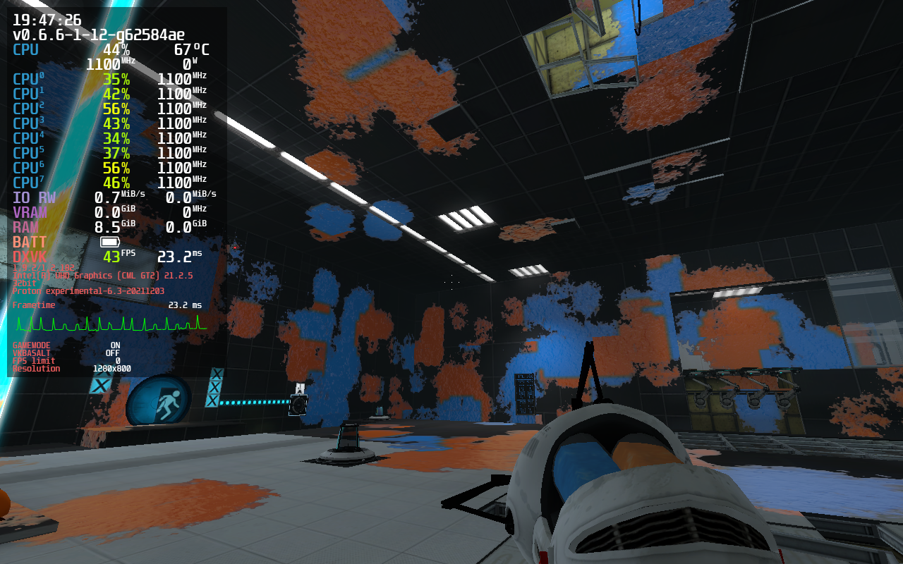
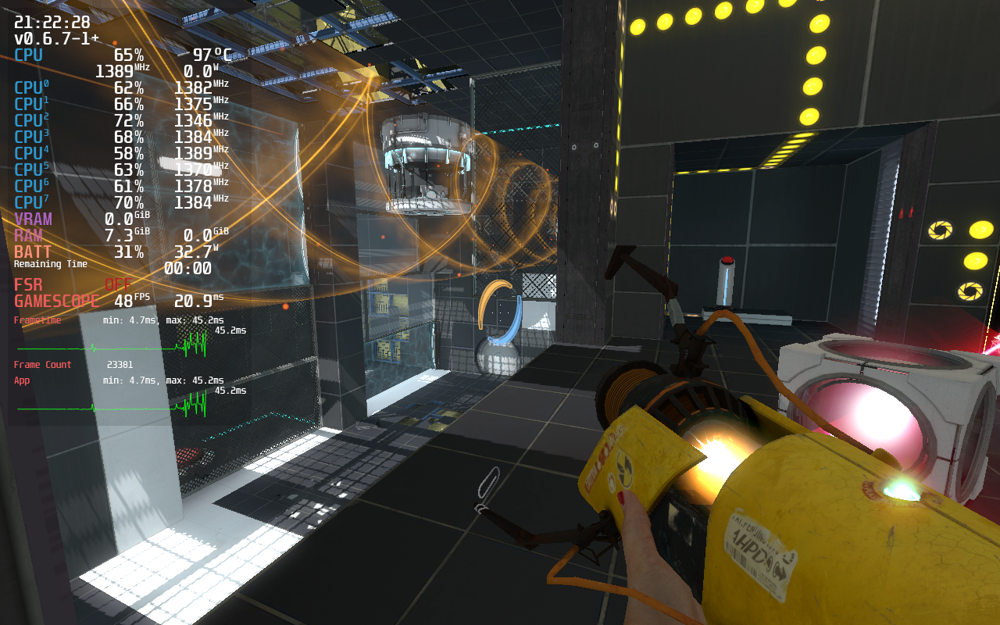

Important Information
General Information
- Intel's Mesa3D Linux drivers are dramatically unperformant compared to their Windows counterparts.
- Controller support works unless stated otherwise. The exception being Nintendo Switch Pro controllers because as of writing this, wired NS Pro Controllers cause most games in Proton to crash. This will not lower compatibility ratings because of the new HID driver coming in 5.16.
- These notes target SteamOS 3.0 for Steam Deck. I will not be using Lutris.
- Games not scaling to 16:10 isn't a huge enough issue to warrant lowering the rating.
- I expect some games to get updated to fix the issues, such as Portal Stories: Mel
- DualShock 4 and Nintendo Switch Pro Controllers have phantoming issues as of writing this.
- Once Steam Deck is released, THIS WILL ALL BE OUTDATED. I do not recieve my Deck until sometime after Q2 2022.
Game Compatibility Notes
Game compatibility will be testing for: - Tinkering - Stability - Controllers - 1280x800 - Performance - Other flaws
Compatibility Rating Scale
 - Game works perfectly out of the box
- Game works but tinkering will be needed
- Game works perfectly out of the box
- Game works but tinkering will be needed
 - Game doesn't play perfectly even with tinkering, but remains playable.
- Game doesn't play perfectly even with tinkering, but remains playable.
 - Game has notable issues that prevent comfortable play.
- Game has notable issues that prevent comfortable play.
 - Game is outright broken
- Game is outright broken
 - Game is screwed because devs don't bother updating Anticheat.
- Game is screwed because devs don't bother updating Anticheat.
System Specifications
CPU: Intel Core i7-10510U @ 1.8GHz
GPU: Mesa Intel CometLake-U GT2 (UHD Graphics)
RAM: 16GB
Distro: EndeavourOS Linux, Manjaro Linux, Garuda Linux
Steam Deck
What I Know:
- Arch Linux-based OS
- Immutable Filesystem (basically means you can't write to it without dev mode enabled)
- Valve Aerith APU is around an R7 3750H + Vega 10
- Games will be forcing Gamescope by default
- Controls will not work without games run through Steam
- Valve improving non-Steam experience
- New in-house Proton version in development; will be released alongside Deck.
What I Wanna Know:
- Fixing controller issues? (See: Duck Game)
- Mainline Dolphin?
- WinMM SDL support? (See: WinMM)
- Couch experience?
- Better WineD3D support?
- Steam Overlay fixes?
Game Compatibility
Celeste
Native
Technology: FNA/XNA, OpenGL
Controller support: Perfect
Notes:
- See XNA/FNA.
- Doesn't scale to 16:10
DUSK
Native
Technology: Unity, OpenGL (Vulkan optional)
Controller support: Imperfect
Notes:
- Triggers, Stick Buttons, and D-Pad are bored out of the box. Fixed with this controller config.
- -force-vulkan can be used to force Vulkan

Rivals of Aether
Proton (Any modern version)
Technology: GameMaker: Studio, Direct3D
Controller support: Perfect
Notes:
- Doesn't scale to 16:10

ULTRAKILL
Proton (Any modern version)
Technology: Unity, Direct3D
Controller support: None (Steam Input works Great!)
Notes:
- Create a Steam Input controller profile, it works great!

Mutant Mudds Deluxe
Proton (Any modern version)
Technology: Unknown, Direct3D
Controller support: Imperfect
Notes:
- Window will always shrink when in windowed mode, doesn't occur in Proton-4.11
- Game requires that you set controls to controller manually.

Dust: An Elysian Tail
Native
Technology: XNA/FNA, OpenGL
Controller support: Perfect
Notes:
- See XNA/FNA.

LEGO Star Wars: The Complete Saga
Proton (Any modern version)
Technology: Nu2, Direct3D
Controller support: Perfect
Notes:
- None!
Unreal Gold
Proton (GloriousEggroll)
Technology: Unreal (1998), Direct3D+3dfx
Controller support: None (Steam Input works great!)
Notes:
- Using any mainline Proton causes colors to be reduced
- No working controller support, use Steam Input

HROT
Proton (Use 5.0)
Technology: Custom, OpenGL
Controller support: Borked
Notes:
- Any Proton version > 5.0 causes awful performance.
- You must download this OpenAL32.dll file and replace the game's dll to fix audio.
- Steam Overlay doesn't work, causing controllers to be totally borked. Fixed with Gamescope.

DOOM 64
!!!INCOMPLETE!!!
Proton (Any modern version)
Technology: KEX, D3D+Vulkan+OpenGL
Controller support: Perfect
Notes:
- None...?

Quake (2021 Remaster)
Proton (Any modern version)
Technology: KEX, Vulkan
Controller support: Perfect
Notes:
- None?

Mirror's Edge
Proton 5.13
Technology: Unreal Engine, Direct3D
Controller support: Perfect
Notes:
- Using any Proton version newer than 5.13 will cause ambient sound effects to always play at full volume.
- Requires user input for installing NVIDIA PhysX.
- Does not scale to 16:10 properly.

Crysis
Proton (Any modern version)
Technology: CryEngine 2, Direct3D
Controller support: Perfect
Notes:
- Requires user input for installing PunkBuster and GameSpy Comrade.
- SecuROM build is completely borked on AMD. Use C1-Launcher.

A Hat in Time
Proton (GloriousEggroll)
Technology: Unreal Engine 3, Direct3D
Controller support: Almost perfect
Notes:
- Proton 6.3 and Experimental just cause the game to hang.
- You cannot use a mouse and controller in tandem, breaking the Steam Deck touchpads.
Castle Crashers
Proton (Any modern version)
Technology: XNA, Direct3D
Controller support: Perfect
Notes:
- Proton 6.3 causes the audio to stop working.
- Has an option to stretch the game to 16:10 (shown here). I think it's meh but you be the judge.
Bridge Constructor Portal
Native
Technology: Unity, OpenGL (Vulkan available)
Controller support: Perfect
Notes:
- With controllers, the D-Pad, Right Trigger, and Bumpers are completely unresponsive, and Steam Input might not easily help with this. This is fixed with Proton.
- Vulan is available with -force-vulkan

Postal 2
Native
Technology: Unreal 2, OpenGL
Controller support: Perfect
Notes:
- Forced itself to 1024x768 by default. (TODO: Present in Gamescope?)
- Menus are only navigable with D-Pad, unsure why.

Portal
Native
Technology: Source, ToGL
Controller support: Imperfect
Notes:
- Menus are only semi-navigable with the controller. Will likely be better on Deck because of Trackpads.

Portal 2
Native
Technology: Source, ToGL (DXVK-Native available)
Controller support: Full Steam Input Support
Notes:
- Vulkan support with -vulkan flag

Poker Night 2
Proton (Any modern version)
Technology: TellTale Tool, Direct3D
Controller support: Perfect
Notes:
- Doesn't scale to 16:10.
- Cannot be purchased on Steam.

Super Meat Boy
Native
Technology: Unknown, OpenGL
Controller support: Perfect
Notes:
- Doesn't scale to 16:10.
- Linux version is currently outdated, compared to Windows with version 1.2.5
- Proton: protontricks 40800 d3dcompiler_47 xact
- Proton: DualShock 4 broken with menus for some reason

Night Trap: 25th Anniversary Edition
Proton (See notes)
Technology: Unity, Direct3D, Media Foundation
Controller support: Perfect
Notes:
- Poor performance.
- Doesn't scale to 16:10.
- See Windows Media Foundation.
Sonic R
Proton (Any modern version)
Technology: Custom, Direct3D
Controller support: Borked (Steam Input works great!)
Notes:
- It is recommended to use Sonic R Mod Launcher for D3D9 support. Wine-Mono will be required.
- TODO: Multiplayer requires a joystick, doesn't it?
Slayer's Testaments
Native
Technology: QuakeSpasm-Spiked, OpenGL
Controller support: Very Imperfect (Steam Input works great!)
Notes:
- Using a Steam Input config with an analog stick but everything else as KB/M is a good idea.
- Steam Input Controller Config

Tag: The Power of Paint
Proton (Any modern version)
Technology: Custom, Direct3D
Controller support: None (Steam Input works great!)
Notes:
- protontricks d3dx9_35
- Does not scale to 16:10

Sonic Mania
Proton (Any modern version)
Technology: Custom, Direct3D
Controller support: Perfect
Notes:
- Does not scale to 16:10

Sonic Generations
Proton (Any modern version)
Technology: Custom, Direct3D
Controller support: Perfect
Notes:
- Stretches screen for 16:10. Blegh
- Brings up configuration screen on first boot. Might need desktop access.
- Really bad performance issues
PAC-MAN Championship Edition DX+
Proton (Any modern version)
Technology: Unknown, Direct3D
Controller support: Perfect
Notes:
- Doesn't scale to 16:10
Jazz Jackrabbit 2
Proton (Any modern version)
Technology: Unknown, DDraw, WinMM
Controller support: Bad (Steam Input works decently well)
Notes:
- Locked to 4:3
- Requires dgVoodoo2, add ddraw.dll as native to winecfg
- Steam Input Config
- Credits render as black and flicker when you skip them.
- Delete C:\Windows\SysWOW64\winejoystick.drv to fix the ghost joystick issue. (This unfortunately makes multiplayer inaccessible).
- TODO: Stability issues?
Rikki & Vikki
Proton (Any modern version)
Technology: BupSystem (Spicy Atari 7800 Emulator), Direct3D
Controller support: Almost perfect.
Notes:
- Use -streaming flag to force fullscreen and autoconfig joysticks
- Will open dialogue box when controller that was connected previously is no longer present. Requires mouse to dismiss.
- Requires desktop access to disable bilinear filtering.
Aperture Tag: The Paint Gun Testing Initiative
Proton (Any modern version)
Technology: Source, Direct3D
Controller support: Almost perfect.
Notes:
- Native build was completely borked, even when replacing the executable.
- Title screen menus were jank with controller. Thankfully touchscreen will alleviate this.

Portal Stories: Mel
Native
Technology: Source, ToGL (DXVK-Native available)
Controller support: Imperfect
Notes:
- Joysticks were borked ingame with Steam Input enabled. Jankily fixed with a Steam Input Config to map joysticks to WASD and mouse.
- Title screen menus were jank with controller. Thankfully touchscreen will alleviate this.

Narbacular Drop
Proton (Any modern version)
Technology: Unknown, Direct3D
Controller support: None (Steam Input gets the job done)
Notes:
- Occasional crashes, related to uncapped framerate?
- Oversized flames in torches and portals. GitHub issue

Micro Mages
Proton (Any modern version)
Technology: NES Emulation, Direct3D
Controller support: Almost perfect
Notes:
- You cannot use both the analog stick and the D-Pad. This controller config works around that.
- This .cfg will have all 4 controllers configured. Place it in the game root directory.
Garry's Mod
Proton (Any modern version)
Technology: Source, Direct3D
Controller support: Bad, use Steam Input
Notes:
- Native Linux build is unstable. Works perfectly in Proton.
- Multiplayer works.
- Official Steam Input config doesn't allow for everything. Get creative! :)

Luna Game
Proton (Any modern version)
Technology: GameMaker, DirectDraw
Controller support: None, use Steam Input
Notes:
- Forcing gamescope is required for Steam Overlay.
- Forcing Wine Virtual Desktop is also required if using gamescope. A resolution of 640x480 is recommended.

Doki Doki Literature Club!
Proton (Any modern version)
Technology: Ren'Py, OpenGL
Controller support: None, use touchscreen
Notes:
- Not in fullscreen by default. Not a huge deal since Deck will use Gamescope
- Game will be unbeatable without going into desktop mode to delete Monika.
- Game doesn't scale to 16:10
- (I'm giving it this rating with Deck in mind, otherwise it's perfect.

Screenshot note: Just Monika.
DOOM (+DOOM II +Master Levels)
Native (Luxtorpeda)
Technology: GZDoom, Vulkan, OpenGL
Controller support: Almost perfect.
Notes:
- GZDoom has a ton of options and looks really bad by default.
- Controller support will take a bit of fiddling, but after that, it's perfect. Certain things like the map or the main menu aren't assignable though.
Sonic.EXE
Proton (Any modern version)
Technology: GameMaker, Direct3D
Controller support: None, use Steam Input
Notes:
- It's Sonic.EXE
- "Ready for Round 2, steamuser?"

Sonic Adventure DX
Proton (Any modern version)
Technology: Unknown, Direct3D
Controller support: Perfect
Notes:
- Really bad performance for such an old game. (TODO: Use BetterSADX?)
- Configuration tool will be brought up on first boot. Can be navigated with touchscreen.
Giftscop
Proton (Any modern version)
Technology: Unity, OpenGL
Controller support: None (Steam Input works perfectly)
Notes:
- Steam Input Controller Config
- Steam Overlay broken without gamescope, needed for Steam Input to work.
- Mutliplayer might be jank to get working because of Discord.

Sword With Sauce
Proton (Any modern version)
Technology: Unreal, Direct3D
Controller support: None (Steam Input works great)
Notes:
- Developer has abandoned this game

Yume Nikki
Proton (Any modern version)
Technology: RPG Maker, DirectDraw
Controller support: None (Steam Input works perfectly!)
Notes:
- Steam Input Config
- Game uses DirectDraw, and as a result has issues with Steam Overlay. Use Gamescope or dgVoodoo2
FEZ
Native (Thanks Flibitijibibo!)
Technology: XNA/FNA, OpenGL
Controller support: Perfect
Notes:
- None!

Duck Game
Proton (Use GloriousEggroll)
Technology: XNA, OpenGL
Controller support: Imperfect
Notes:
- Requires Proton-GE because using controllers in mainline Proton will not work.
- DualShock 4 controllers have a phantom issue.
- Text in the configuration menu is corrupted but still legible.
- When not using Proton-GE the "-linux" flag must be used otherwise the game will crash.

{kind=link}
Geometry Wars: Retro Evolved
Proton (Any modern version)
Technology: Unknown, Direct3D
Controller support: Perfect
Notes:
- None!
BattleBlock Theater
Proton (Any modern version)
Technology: Unknown, Direct3D
Controller support: Perfect
Notes:
- Native build crashes upon closing FMVs, and the "linuxtest" branch as audio issues. I talked with The Behemoth and they can't do anything about it yet. :/

Sara Is Missing
Proton (Any modern version)
Technology: Java (LWJGL?), OpenGL
Controller support: None, use touchscreen
Notes:
- I'm using GE for this screenshot so MangoHUD works.

Another World: 25th Anniversary Edition
Native
Technology: Unknown, OpenGL
Controller support: Good, menus jank (it's like that on Windows)
Notes:
- None...?

The Henry Stickmin Collection
Proton (Any modern version)
Technology: Adobe AIR, Direct3D
Controller support: None, use touchscreen
Notes:
- Stretches screen to fit 16:10. Gross.
- Framerate will appear to fluctuate, but this is a quirk of Adobe Flash. Ignore it.
Slender: The Eight Pages
Proton (Any modern version)
Technology: Unity, Direct3D
Controller support: None, use Steam Input
Notes:
- Really bad performance even on Fastest settings.
- Brings up a standard Unity configuration menu on boot.

Deltarune
Proton (Any modern version)
Technology: GameMaker, Direct3D
Controller support: Perfect
Notes:
- Windowed mode by default. Not a big deal since Deck uses Gamescope. Can be forced in configuration.
- Doesn't have the fancy borders of the Nintendo Switch version.

Golden Axed: A Cancelled Prototype
Proton (GloriousEggroll)
Technology: Unity, Direct3D
Controller support: Perfect
Notes:
- Brings up a generic Unity configuration screen.
- MangoHUD and Steam Overlay have loads of trouble here.
- Requires Media Foundation for 60SEGA intro.
- Does not scale to 16:10.

TuxRacer
Native
Technology: Unknown, OpenGL
Controller support: Bad (Steam Input works fine)
Notes:
- Responded to Steam Input keyboard emulation but not alternate controller schemes (e.g. swapping buttons); it's based on SDL 1.2.
- Gamescope is highly recommended as it will mess with X server resolutions.
Screenshot note: It is possible to change the game resolution, located in ~/.config.
IMSCARED
Proton (Any modern version)
Technology: GameMaker, Direct3D
Controller support: None (Steam Input works fine)
Notes:
- Game relies on file manipulation.
- Desktop folder is created in WinePrefix, but not in ~/Desktop.
- Cannot refocus game after alt-tabbing when in Windowed mode.
- Some versions of Proton have issues with a stuttery mouse.
- THIS GAME, IN ITS CURRENT STATE, WILL NEVER BE GOOD ON A HANDHELD.
Undertale
Proton (Any modern version)
Technology: GameMaker: Studio, Direct3D
Controller support: Perfect
Notes:
- Always windowed by default. Gamescope fixes this.
- Linux: HORRIBLE frame pacing.
- Linux: No joystick support (Steam Input works perfectly)
- Linux: Crashes with Feral GameMode.
Screenshot note: MangoHUD looks like that because it had problems with this game and Gamescope.
The Jackbox Party Pack 3
Native
Technology: Autodesk Gameware, OpenGL
Controller support: Good
Notes:
- Controller phantom issues, even with Xbox One controller.
- Game will really screw with X servers. Gamescope is highly recommended.
- Game does not scale to 16:10.
Cave Story (NXEngine)
!!!INCOMPLETE!!!
Native
Technology: SDL 1.2
Controller support: Broken
Notes:
- Game will screw with X servers. Use gamescope.
- Xbox One Controller does not work when gamescope is attached. (TODO: Test DualShock 4)
Technology Compatibility
XNA/FNA
- Examples: FEZ, Celeste, Duck Game, Dust: AET
- Many XNA games will use FNA for ports
- Many XNA games have issues with the Steam Overlay. This is fixable with gamescope but gamescope is jank
- FNA games have issues with screen tearing, thanks Xorg.
Windows Media Foundation
- Examples: Night Trap, Persona 5 Strikers, Nioh 1+2, Monster Hunter World
- There are a handful of games that use Media Foundation for FMVs and they don't work in Wine by default.
- To work around it, you can use either Proton-GE (Imperfect) or rip the DLLs from a Windows installation (perfect).
- Otherwise, more often then not, games will just display a test pattern.
DirectDraw
- Examples: Yume Nikki, Luna Game, Jazz Jackrabbit 2
- Outdated DirectX graphics API that renders in WineD3D. Will cause problems with Steam Overlay.
- The workaround is to force dgVoodoo2 or use Gamescope.
Windows Multimedia API
- Examples: Jazz Jackrabbit 2
- Causes issues with Joysticks because Proton's implementation currently relies on /dev/jsX and not SDL2.
- Fixed in Wine commit 4f1095a0ee4c7577e5287e56e388c36d0ba659ad.
dgVoodoo2
- Closed source.
- Doesn't respond to configuration changes in Wine, dgVoodoo logo is stuck permanently! >:(
Glossary
Gamescope: An XWayland window compositor by Plagman that will force windows into fullscreen
Steam Input: Valve's powerful controller configuration software
ToGL: Valve's Direct3D->OpenGL abstraction layer used in their earlier Linux ports.
DXVK-Native: A version of DXVK designed for usage outside of Wine.
dgVoodoo2: A reimplementation of 3dfx Glide and Direct3D versions < 9 in Direct3D 11
Steam Linux Runtime: A debian container as part of Steam Play that games can be run inside in attempt to fix any issues.
Proton: A Steam Play compatibility tool that utilizes a heavily modified fork of Wine in conjunction with a few other components such as DXVK to assist games on Linux
DXVK: A DirectX compatibility layer designed for Wine that will translate Direct3D 9, 10 and 11 to Vulkan.
Work-In-Progress
Games to test: - Grand Theft Auto III- Grand Theft Auto: San Andreas
- Grand Theft Auto: Vice City
- Quake II
- Deus Ex: Game of the Year Edition
- Unreal Tournament: Game of the Year Edition
- Wolfenstein 3D
- Stick Fight: The Game
- Sonic CD
- SIMULACRA
- SIMULACRA 2
- Cookie Clicker
- Shovel Knight: Treasure Trove
- LEGO Batman: The Videogame
- The LEGO Movie Videogame
- Portal Reloaded
- Among Us
- Psychonauts
- Tomb Raider I
- Half-Life (Steam Release)
- Guacamelee! Super Turbo Championship Edition!
- Five Nights at Freddy's
- Braid
- Ultimate Chicken Horse
- The Basement Collection
- LEGO Island
- LEGO Racers
- The Neverhood
- Commander Keen Complete Pack
- Streets of Rage 4
- Gang Beasts
- SpeedRunners
- Gang Beasts
- Quake III Arena
- NiGHTS Into Dreams...
- Return to Castle Wolfenstein
- Quantum Conundrum
- LIMBO
- Little Nightmares
- Minecraft
- F.E.A.R.
- Star Wars: Dark Forces
- Myst: Masterpiece Edition
- Star Wars Jedi Knight: Dark Forces II
- Geometry Wars: Retro Evolved
- Peggle Deluxe
- EDGE
- AMID Evil
- Counter-Strike: Global Offensive
- Brawlhalla
- Bayonetta
- Batman: Arkham Knight
- Angry Video Game Nerd Adventures
- Perspective
- SlendyTubbies
- SCP: Containment Breach
- Duke Nukem 3D
- SuperTux
- SuperTuxKart
- 3D Pinball for Windows: Space Cadet
- Super Mario War
- Mari0
- The Powder Toy
- Sally.EXE